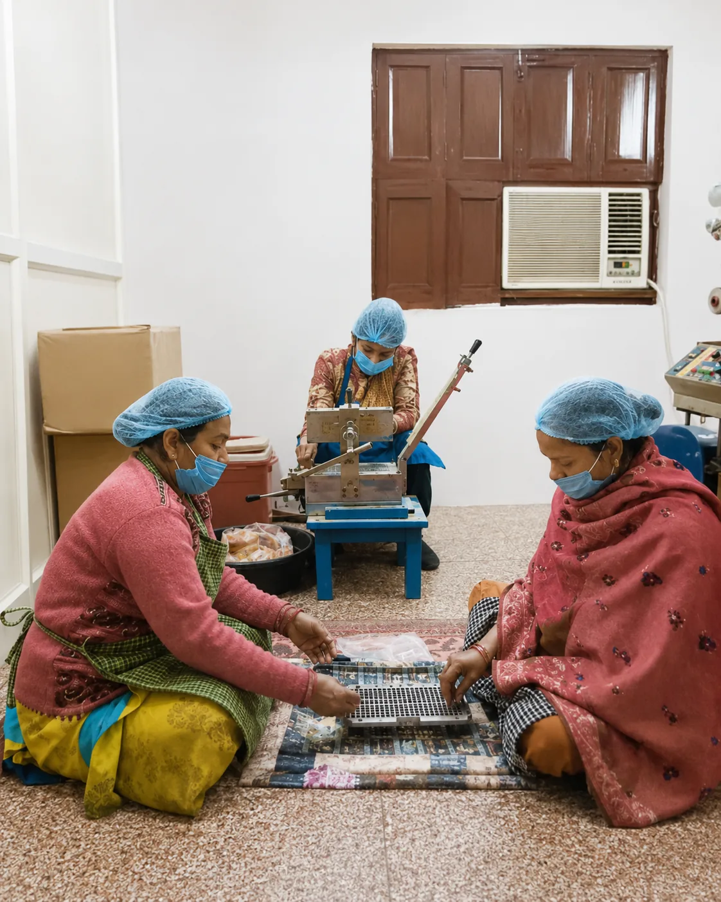

GMP Certified
Manufacturing practices focused on hygiene, consistency, documentation, and quality control.
Licensed manufacturing · GMP certified · Since 1967
Quality Pharmaceuticals combines established Ayurvedic formulation experience with documented credentials, hands-on production, and dependable support for healthcare partners.
Quality Pharmaceuticals, Jajmau
From our Kanpur premises, we manufacture and support a focused portfolio of Ayurvedic healthcare products for families, retailers, and distribution partners. Our range includes syrups, tablets, capsules, oils, ointments, drops, and traditional churan.
We present real facility photography, published business details, and product-specific documentation so partners can evaluate the company and range clearly.
Published business credentials
Manufacturing practices focused on hygiene, consistency, documentation, and quality control.
Manufacturing licence displayed for partner verification.
Published GST registration for transparent business enquiries.
Decades of experience serving families and healthcare partners.
Inside the facility
Authentic views of the people, equipment, and processes behind the Quality Pharmaceuticals range.




Our product formats
The catalogue spans digestive health, women’s wellness, baby and family care, liver and tonics, respiratory care, pain and joint care, skin allergy, ear care, fever care, and memory and wellness.
Manufacturer questions
Yes. The website publishes manufacturing licence A-73/1977/2018 and GSTIN 09AAAFQ7540F1Z9 for business verification.
Quality Pharmaceuticals is located at H. No. 1075 (193), Adarsh Nagar, Jajmau, Kanpur, Uttar Pradesh 208010.
The catalogue includes syrups, tonics, tablets, capsules, oils, ointments, drops, gripe water, and churan across several wellness categories.
Call +91 73553 61236 or use the website contact page for product, availability, and distribution enquiries.